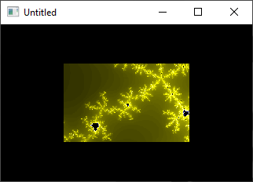

Home • News • GitHub • Wiki • Samples • InForm • GX • QBjs • Community • More…
SAMPLE: MANDELBROT ZOOMER

Author
Description
'QBDEMO (C) 2002 Tor Myklebust
'The fractal zoomer should run at 60FPS on a 500MHz machine. I disabled
'vsync because it runs like shit on this 300MHz machine on the higher zoom
'levels (inconsistent 20-30 fps). I basically just packed the rest of the
'demo with really shitty effects. There is no music because I don't know
'a damn thing about sound coding (aside from the fact that you use Fourier
'transforms a hell of a lot), and I also don't know the first thing about
'art/music.
'The fractal zoomer uses a number of cheap hacks. First, I only render
'the fractal image once per 50 frames. It zooms in by a factor of two
'each time. It is rendered at a resolution of 320*200, because we don't
'want blockies to show up on our 160*100 rendered image. I've tried
'doing the "maximal" 224*141 (or thereabouts) image and it looked bad.
'We render four scanlines per frame, drawing as few pixels as possible.
'We zoom the 160*100 in the middle of the previous frame's 320*200 to take
'up every fourth pixel in the new frame, then (ab)using the intermediate
'value theorem for the pixels in between if the neighbour pixels are the
'same colour. This causes some minor visual artefacts which you shouldn't
'be able to see (except the one white line where the yellow is disappearing)
'This code is VERY LOOSELY based on Alex Champandard's code in his "The Art
'of Demomaking" series. I made up the zoom hack and the IVT hack because
'QB is more than twice as slow as DJGPP. I thought his palette-cycling
'looked really stupid, so I omitted that.
'I shouldn't need to explain the shadebob effect. Everyone knows how to do
'shadebobs, or can at least figure it out in two or three minutes. No
'hacking was necessary here, as the effect is trivial to begin with.
'I also shouldn't need to explain plasma. No hacking was involved here,
'either.
'I did the flag thing because I saw an american flag flying in some past demo
'which i just looked at (15 minutes before the deadline). I didn't have time
'to code an american flag burning (I've done this in C by just rendering less
'and less of the flag (having the fire "crawl across" the flag) each frame,
'and using the "burning" areas to seed a fire. Besides, burning is supposed
'to be a proper way to retire a flag, and we can't have that.
'I wanted to add a (phongshaded, swept) scrolltext, but time did not permit
'it. You can see something like this in mesha or lbd or something (however,
'because QB is QB, it probably wouldn't be half the quality).
'I started this 27 hours before the deadline, and finished it _on_ the
'deadline. Yay for me.
QBjs
Please note that QBjs is still in early development and support for these examples is extremely experimental (meaning will most likely not work). With that out of the way, give it a try!